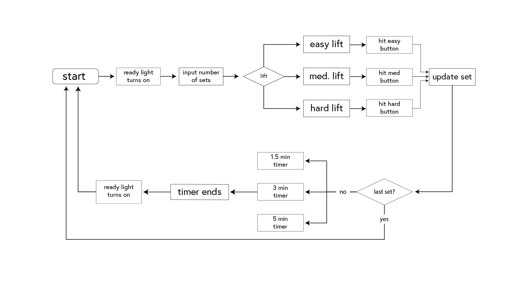
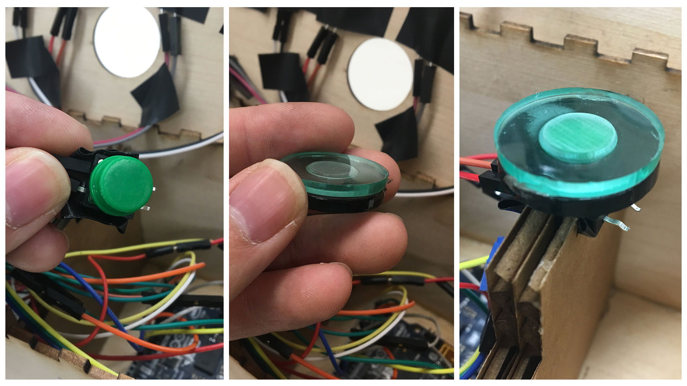
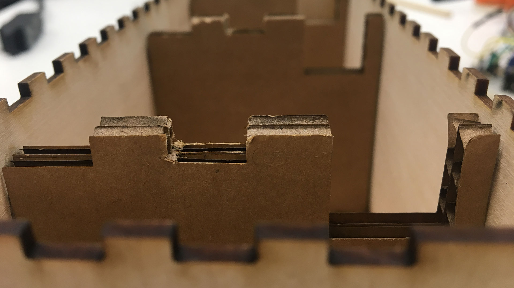
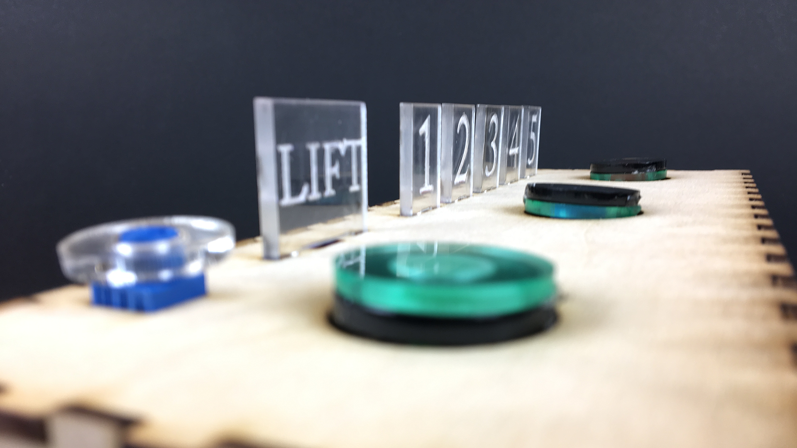

I chose to create a timer and interactions catered towards powerlifting use but my first task was creating a basic working model prototype by translating user actions (basic strength training programming) to a logical framework and coding it.
Then I considered the interactions themselves - the visceral slamming of a button versus a calculated press meant that simple adjustments to default sensor components like creating a larger surface area for buttons created a better experience for my user.


I also knew the physical design of my product had to account for assembly and its components, so I included small features like wire management.
For the display, I decided to use edge lighting. In addition the laser etching, I also made some small adjustments with an X-acto knife to get the lighting even brighter. Ultimately with more focused and brighter LEDs along with more refined acrylic edges, the effect could’ve been even more pronounced.


Given more time, my first priority would have been better form development - while the box clearly embodied the stability, how could I better translate the story through form or could it be embedded in a powerlifting belt?